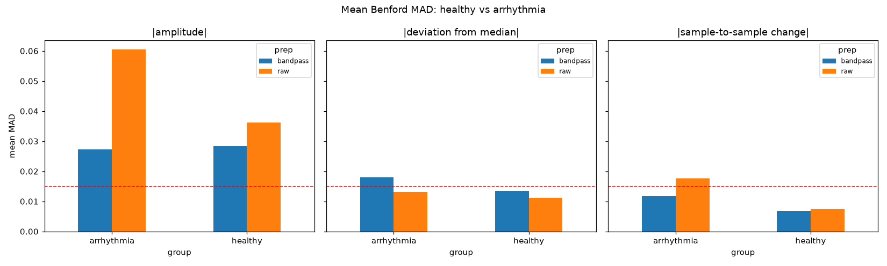
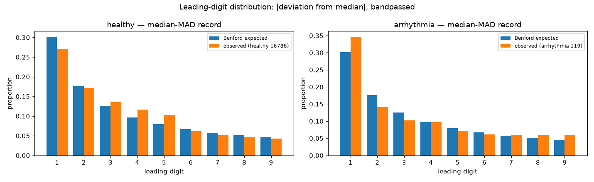

Does the first-digit distribution of ECG-derived quantities follow Benford's law — and do abnormal ECGs deviate from it more than healthy ones? This page documents the research so far: the question, the data, the pipeline, what the numbers actually say, and where the analysis could still be wrong.
Benford's law states that in many naturally occurring datasets, the leading digit d of a number occurs with probability
so that 1 appears as the leading digit about 30.1% of the time and 9 only about 4.6%. The law tends to hold for data spanning several orders of magnitude with a right-skewed distribution. Electrocardiograms are an interesting test case: raw ECG amplitudes are roughly symmetric and narrowly ranged (a poor Benford candidate), but derived quantities — deviations from baseline, sample-to-sample changes — may behave differently. The research question is therefore comparative rather than absolute: do arrhythmic ECGs deviate from Benford's law significantly more than healthy ones? Framing it as a comparison matters, because it determines which statistics are valid [1].
The analysis design leans on five papers, each contributing one load-bearing idea:
Chi-square is the wrong gatekeeper. Kossovsky [1] shows that the chi-square goodness-of-fit test rejects textbook-Benford datasets (e.g., Oklahoma state expenses: SSD = 0.9 yet χ² = 978.4) while accepting data nowhere near Benford (atomic weights: SSD = 334.9). The test is valid only when each point is randomly and independently sampled from a much larger Benford universe — almost never true of real data. The takeaway adopted here: verdicts rest on distance measures (MAD/SSD), never on chi-square alone; and the compliance-vs-comparison distinction means distance-from-Benford is the right tool when the question is "how far?", not "does it follow?". Kossovsky also motivates precondition checks used in the pipeline: the robust order of magnitude ROM = log10(P99/P1) should exceed roughly 2.5–3, the data should be right-skewed, and symmetric distributions are inherently non-Benford regardless of spread — which explains why raw ECG amplitudes failed while |deviation from baseline| worked.
Which conformity tests have good properties? Lesperance et al. [2] compare Benford conformity tests by simulation and find Pearson's chi-square is not the most powerful under all alternatives; discrete Cramér–von Mises statistics often perform very well, and simultaneous confidence intervals (Goodman; Sison & Glaz) are recommended for seeing where departures occur rather than reducing everything to one p-value. Adopted here as planned upgrades: Cramér–von Mises as a principled alternative test and simultaneous CIs around per-digit proportions on conformity plots.
A biological-data precedent. Morag and Salmon-Divon [3] analyzed 1,018 single cells across six human cell types and found first digits of gene-expression values clearly adhering to Benford — yet chi-square rejected conformity (p < 10−16) over minor deviations. This is the citable defense for trusting MAD over chi-square on large-n biological data: the exact disagreement pattern this project expects to see.
Benford-as-distance on time series. Srivastava, Tiwari, and Singh [4] introduced the Benford's Law Compliance Test (BLCT) for rotor-stator rub vibration signals, using Euclidean distance of the digit distribution from Benford to segregate chaos from noise — and explicitly named heart-rate/heart-attack analysis as an extension. It is the closest applied precedent for this project: Benford-as-distance on a time series to classify dynamics, with a Euclidean-distance framing equivalent to the SSD/MAD approach used here.
The MAD yardstick. Nigrini's book [5] (with the earlier Drake and Nigrini treatment [5]) established the mean absolute deviation — MAD = mean over digits of |observed − Benford| — as the practitioner's conformity measure: sample-size-independent, unlike chi-square. The verdict bands used in this project are adapted from that framework: ≤ 0.006 close conformity, ≤ 0.012 acceptable, ≤ 0.015 marginal, above that non-conformity.
| Group | Database | Records | Native sampling |
|---|---|---|---|
| Healthy | MIT-BIH Normal Sinus Rhythm (nsrdb) | 18 | 128 Hz |
| Arrhythmia | MIT-BIH Arrhythmia (mitdb) | 48 | 360 Hz |
Both databases were accessed through PhysioNet. Because the two groups were recorded at different sampling rates — and mixing rates was verified in the pilot to silently skew |diff| digit distributions — all records are resampled to a common 250 Hz before any comparison. The pilot study additionally compared one healthy record (nsrdb 16265) against one arrhythmic record (mitdb 208) end to end.
Each record is analyzed on lead II, in three derived features — |amplitude|, |deviation from median|, and |sample-to-sample change| — each computed on the raw signal and on a bandpassed version. Values below 10−9 mV are dropped before digit extraction (filtered signals contain ~10−16 numerical noise near zero that would pollute digit counts). Leading digits are extracted vectorially (no per-sample loops), giving on the order of 150k digits per record.
Primary metric: MAD. Mean absolute deviation of the observed digit proportions from Benford, with the bands above. Chi-square is reported for completeness but is not used as a follow/not-follow gate — at n ≈ 150k it rejects nearly everything, which is exactly the failure mode documented in [1] and [3].
Group comparison: Mann–Whitney U. The U test is used in its valid role: asking whether the healthy and arrhythmia groups differ in Benford conformity (per-record MADs as the observations). It cannot test one signal against Benford's law — that is what MAD is for. Planned additions: ROM and skewness precondition checks [1] and simultaneous confidence intervals on the conformity plots [2].
The pilot established the feature-selection logic: raw |amplitude| and RR intervals fell in the non-conformity band for both records — expected, since symmetric, narrow-range data cannot be Benford [1] — while |deviation from baseline| reached the acceptable-conformity band in both. The pilot's real contribution was methodological: it proved the pipeline runs end to end on real PhysioNet data and exposed the sampling-rate confound that v2 fixes.
The strongest and most consistent separation appears for |sample-to-sample change|:
| Preparation | Healthy median MAD | Arrhythmia median MAD | Mann–Whitney p |
|---|---|---|---|
| Raw | 0.0073 | 0.0171 | 3.36 × 10⁻⁸ |
| Bandpassed | 0.0062 | 0.0107 | 3.10 × 10⁻⁴ |

|sample-to-sample change| (right panel) shows the cleanest group separation; |amplitude| (left) is non-conforming for everyone, as theory predicts.
|deviation from median| for the median-MAD record in each group (healthy 16786; arrhythmia 119), against the Benford expectation. Both track the theoretical curve, with visibly larger departures in the arrhythmic record.|diff| separation a resampling artefact?Healthy records are upsampled (128 → 250 Hz) while arrhythmia records are downsampled (360 → 250 Hz) — different operations per group. To rule out a processing artefact, the comparison was repeated at native sampling rates using the fs-normalized slope magnitude |dV/dt| = |diff| × fs (mV/s), which needs no resampling at all:
| Feature (native fs) | Healthy median MAD | Arrhythmia median MAD | Mann–Whitney p |
|---|---|---|---|
|diff| (fs-confounded) | 0.018 | 0.070 | ≈ 8 × 10⁻¹⁰ |
|dV/dt| (fs-normalized) | 0.033 | 0.079 | ≈ 5 × 10⁻¹⁰ |
The separation survives normalization, so it is physiological rather than a resampling artefact.
On |sample-to-sample change|, neither group closely follows Benford in absolute terms. The finding is relative: arrhythmic records deviate from Benford significantly more than healthy ones. Any framing stronger than that would overclaim what the data show.
The two groups come from different databases, recorded in different eras, on different hardware, with likely different age distributions. That confound is a bigger threat to the conclusion than the unequal group sizes (18 vs 48) — Mann–Whitney and Kruskal–Wallis do not require equal n.
Further caveats: consecutive ECG samples are autocorrelated and do not satisfy chi-square's independent-sampling assumptions, which is why the analysis uses a distance-from-Benford comparison framing with MAD as the primary measure [1]. These are exploratory dataset-level findings, not yet evidence that abnormal ECG universally violates Benford's law. The planned multi-category extension (healthy / MI / arrhythmia / further abnormalities) under a single recording protocol is designed to address the database confound directly.
More categories, one protocol. Add an MI (myocardial infarction) group via the PTB Diagnostic ECG Database (1000 Hz, with healthy controls), resampled to 250 Hz for comparability. The cleaner long-term source is PTB-XL, which provides normal, MI, and conduction-disorder records all at 500 Hz under one recording protocol — neutralizing sampling-rate and hardware confounds across groups.
More features. Wavelet detail coefficients (spanning many orders of magnitude — strong Benford candidates) and second-digit Benford analysis. Longer analysis windows (full 30-minute records) once the pipeline is trusted.
Confound checks first. Before interpreting any separating feature: rule out age, sex, QRS amplitude, and record length as drivers. Then the planned statistical upgrades: ROM/skewness preconditions [1] and simultaneous confidence intervals [2].
Reproducibility. Analysis in Python (wfdb, NumPy, SciPy, matplotlib); the pipeline lives in benford_ecg_v2.ipynb, tested end to end on all 66 records.